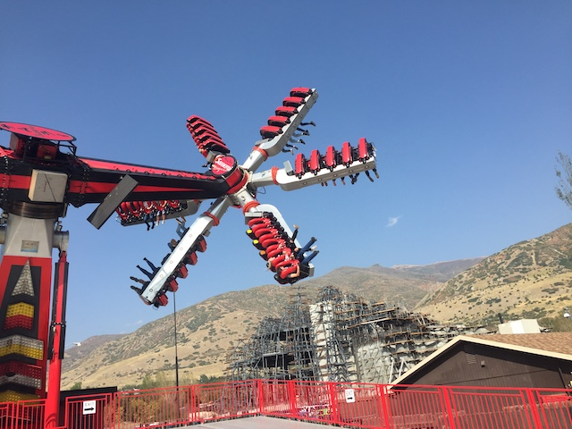

Lagoon is certainly one of the less known parks in the United States as well as one of the more different parks as well. For while it may not be that well known, it's a real shame because LAGOON IS FREAKING AWESOME!!! It doesn't get that much attention because of two main factors. #1. It's located in Salt Lake City, which is not a big roller coaster destination. So just like how many enthusiasts are missing out on one of the greatest wooden coasters ever because Vancouver is not a roller coaster enthusiast destination, many enthusiasts are missing out on this great park because Salt Lake City is not a roller coaster enthusiast destination. And #2. Most people look at a park like Lagoon and just don't think too much of it. They underestimate it because it doesn't have the biggest or the best roller coasters. They don't have any B&Ms or Intamins or RMCs. None of their coasters are Top 10 Worthy. But at the same time, they not only have a really big roller coaster collection, but they also have some roller coasters that are not only really good, but also incredibly unique, whether their unique in that they're the only coaster of their kind that ever got built, or they're part of a dying breed and becoming more and more rare by the day. And on top of that, the park just has such a good balance. It has just the right amount of flat rides in the park, the right amount of dark rides, the right amount of water rides, it's just all balanced so well. Everything is just done right for some reason. I know a lot of people, locals included, may be wondering how the hell a park like Lagoon manages to still make it onto our Top 10 Theme Parks List. But yeah, it just does everything so well. So keep reading and you'll see just how Lagoon does such a good job in every category since I know a lot you are very skeptical and flat out disagree with our praise of Lagoon. Well keep reading and let us make our point. =)
Here are the reviews of all the Flat Rides at Lagoon. All right. Let's start with the star flat ride of the park. Samauri. This is a Top Scan, and let me tell you. These things are absolutely INSANE!!! I LOVE THESE THINGS!!! It's a real shame that most parks in America don't have these rides, because Top Scans are a really amazing kind of flat ride, and Samurai is living proof of that. It's basically a sit down version of Tango, which is one of my favorite flat rides of all time. Yeah, it is THAT good of a ride. It just flips you all over the place and does all sorts of crazy stuff. We need more flat rides like that. Build more Top Scans please. =) Moving on, and luckily, Lagoon has a GREAT flat ride selection, so there are many more flat rides for me to talk about. They also have an Air Race, which I am very happy to report, are spreading like wildfire. Good thing because they're awesome. It's literally just doing constant corkscrews throughout the ride, just flipping and flipping and flipping. I LOVE IT!!!! =) They also have an S&S Tower, with both a Space Shot setting and a Drop Tower setting. Eh..., yeah. They are pretty weak, but they're still a lot of fun. They do have one of those split Top Spins with the firehouse. The only other place where they have a Top Spin like that is Canada's Wonderland. Yeah, the flat ride collection here is almost SCARILY similar to that of Canada's Wonderland. Anyways, the split Top Spin, while it looks cool, is actually pretty lame. But hey. That's no big deal. They still have a bunch of other great flat rides. They have a Rock O Plane, which is a lot of fun. Yeah, it's a bit of work, but it's an old school flat ride that's a lot of fun. They have an Enterprise, and unlike most parks in the U.S, they don't water down the program. They run it at full speed. Their bumper cars may not seem like anything special, but guess what? You can actually bump people on the ride!!! I may sound like an idiot for going nuts over something as obvious as that, except in the United States, this sadly, isn't that common. Most U.S parks have some stupid rule with "No Head On Bumping" or even worse, "One Way Only". SERIOUSLY!!? WHAT THE F*CK!!? Ugh. This is one of the few parks in America that know how the hell to operate bumper cars properly. So definetly give them a ride while over here. And speaking of unique rides, their Ferris Wheel is also fairly unique. It may not look like so, but this one is actually a Teacup Ferris Wheel. Sadly, it doesn't work as a real spinning ferris wheel that works as a ride in itself, but it still is a big improvement for the ride. And Lagoon also has a lot of other cool flat rides. They have some flyers, a fun little dragon ride, a music express, a paratrooper, a pirate ship, a scrambler, a tilt a whirl, some chairswings, and of course, a carousel. And all of them are very well run. So yeah. The Lagoon flat ride collection easily gets an A+ with a ton of flat rides, both hip and modern, classic old-school, common, and unique.

THESE RIDES ARE AMAZING!!! WE NEED MORE TOP SCANS!!!
Dark Rides
Lagoon is one of those parks where they may not have a good dark ride collection, but you know what? It's still just a lot of fun. Both of the dark rides at Lagoon are these sort of classic, almost "So Bad It's Good" dark rides. OK, that's not fair. These flat rides aren't as sh*tty as something as let's say...Zombie. But yeah, it's pretty safe to say that these dark rides are sh*t, even if they are fun sh*t. First off, let's talk about the better dark ride, Dracula's Castle. This ride is pretty much your typical crappy dark ride, except for one thing. This ride goes on FOREVER!!! No really, it's like 5 minutes long. You just assume that you go through these crappy rooms and then exit the ride. Except there's another crappy room. And another one. And another one. And another one. I think they're trying to scare you in just trying to trick you into thinking that this ride goes on forever. Their other dark ride is Terroride, and yes, that is a pun on terrorize. Ha ha. Very funny. This is another one of those crappy dark rides that you ride just to get a laugh. I mean, it says just these really stupid stuff. I enjoyed both of these rides, but I can totally understand if you don't and just find them stupid and annoying.
"When my wife says to bring home the bacon, she really means it."
Water Rides
I rode both of the park's water rides. So yeah, let's get talking. First up, the star water ride, Rattlesnake Rapids. Now this ride is sort of hidden and not really talked about, but it's not only good, it's REALLY good. Honestly, it's my favorite rapids ride in the United States and gets a pretty solid spot on our Top 10 Water Rides List. Now this may not look that good, but trust me, it's really freaking awesome. First off, the setting on this ride, is really freaking good. At one point on the ride, you actually go through a butterfly exhibit during the ride, so you get a lot of natural beauty from that, as well as through a lot of other pretty gardens. And don't worry, you won't stay dry on this ride. Not only are the rapids good, but there's also the waterfall. Trust me, you can't escape the waterfall. IT WILL GET YOU!! YOU WILL GET WET!!! So yeah, their rapids ride is amazing. Their log flume however, is sadly just meh. I mean don't get me wrong, it's all right. It still has a really nice setting. The ride itself however...it's pretty lame. Sorry, its just not a good layout. But hey, Rattlesnake Rapids is more than enough to give the water ride collection a solid A. Definetly make sure you check it out.
Water water everywhere. We're gonna get wet.
Water Park
(Lagoon-A Beach)
And then there's their water park. Lagoon-A Beach. See. It's play on Laguna Beach. Very funny. Though seriously, Laguna Beach is overrated. As a So-Cal local, I mean it. But anyways, back to Lagoon-A Beach. This is just a small little water park, but I've been to Lagoon so many times, that I still managed to take a visit to it eventually. And while it may not look like too much, Lagoon-A Beach is actually a really fun little water park to spend an hour or two in. So yeah, let's go over all the major water slides. First off, the drop slides. These drop slides may not look like anything special, and yeah. They're not going to make our Top 10 Water Slides List, but it's still just a ton of fun. Especially in the fact that they do some cool stuff before dropping into the water. That's always a ton of fun. They also have a clone of the Soda Straws from Schlitterbahn. And yeah. It may not look like much, but if you look closely, you'll see that this slide twists over and under itself repeatedly at the bottom, and yeah. You feel all the twists. It's honestly a really underrated slide. I really hope more of those Soda Straws come around because they really are awesome. The tube slides, I didn't really bother with. But I'm sure they're fun. And I'll ride them eventually. But yeah. Lagoon-A Beach may not be anything special, but if you have some leftover time, give it a visit. It's a fun little water park.
That twisty stuff really makes the drop slide better.
Dining
Lagoon finally has something it can brag about in their dining department! And that, would be the Bier Gartens. Yeah. They have beer gardens at Lagoon, and I have to admit! It's really good! Not only does the entire new area kind of look like some sort of small quaint little German village, but the food is actually really good too. It's pretty much German Food. So Brautswurth, Schnitzel, and all sorts of good beer! Sure, it's not quite as good as the real stuff you have in Germany. But you know what? It's still really freaking good scnitzel! Great Brautwurst! And they have all sorts of good beer! Easily the best stuff in Lagoon's food department. Because the rest of the park, it just has your typical chain resteraunts, only marked up at crazy high prices. For instance, we ate at the Subway here one time (I forget why though) and the meal cost me nearly $15. Yes, I did get a Foot Long, but still!!! Granted, it's still not that bad by Amusement Park standards. I mean, at least it's not as bad as the Taco Bell at the Santa Monica Pier. And I'm not even going into the outrageous prices at Knotts Berry Farm. But even the chains in the park aren't the best. Subway isn't that good, and I'm not the biggest Arbys fan either. They have a Thai place, but it just seems like the same sort of crappy place downtown that doesn't seem that good. Apparently, I've heard they have a BBQ place, but I've certainly never seen it. And then, yeah. There's all the typical treats and goodies you'd find at any theme park, except here, when you get ice cream, you get both a cup and a cone. =) But honestly, the one thing Lagoon has going for its dining department would be Swig Soda the Beaver Tails. Swig Soda is a local Utah thing, so if you're a local, you probably don't care. But basically, it's just Soda Cocktails. They're great! Just add Vodka, and you have yourself a real cocktail! And as for Beaver Tails, I can't think of any park that sells them and yeah. They are REALLY good. Definetly make sure you get one. They're both delicous and unique to America. =)
They seriously have some great beer and schnitzel here!
Theming and Other Attractions
Here are the reviews of all the other stuff at Lagoon. As far as theming goes...I wouldn't say there's none, but it's very minimal. But honestly, you don't need theming at a park like Lagoon. Cause let's just face it. The setting for this park is just GREAT!!! I love how it's right by the mountains and you just get a really nice vibe here. And not to mention, on the Ferris Wheel, S&S Towers, and Cannibal, if you look closely, you can see the Great Salt Lake. Not sure if its Top 10 worthy after so many amazing European parks, but it's really good regardless. But yeah, Lagoon doesn't really need the theming. It's got the classic amusement park charm. Now let's talk about other attractions, because there's one big thing at Lagoon that I still have yet to talk about. Pioneer Village. This is a big portion of the park that doesn't have any rides, it's pretty much all just this giant exhibit of how Salt Lake City used to be back in the 1800s. And they show you everything. They show you the jail, the carpenters shop, the old camera equipment, the dentist's office, the blacksmith. If you name it, they pretty much have the 18th Century equivelant of it in Pioneer Village. There's honestly just a ton of cool stuff to learn in here. It's almost like a museum within the park itself. Except unlike at most museums, I don't get bored and you can come back and still discover new things. I keep hearing that this is what Ghost Town at Knotts Berry Farm used to be like. If so, please do more work Knotts, because Pioneer Village is freaking awesome!!! Outside of Pioneer Village, hmm. Not too sure of what else there is. Just the standard arcades and that sort of stuff, but honestly. With all that I mentioned and just Pioneer Village alone, Lagoon has PLENTY of stuff to do. So yeah. You've certainly got your options here.
"Would you please have a seat".
In Conclusion
Lagoon is GREAT!!! It may not look like a special or unique park, but it's honestly one of my favorite amusement parks in America. Yeah, I rank this on par with parks like Knoebels and Holiday World. It just has everything. It has a great coaster collection with some old gems that are sadly dying out, along with some new modern and custom roller coasters. But on top of that, they also have a GREAT flat ride collection, a GREAT water ride, a fun little water park, and even a great educational exhibit with Pioneer Village. It almost doesn't seem like your typical American Theme Park. After visiting a ton of theme parks around the world, Lagoon is far more similar to the average European park than it is to the average American park. It just has this great atmosphere and this great vibe that just makes it such a good park. I know a lot of people haven't heard of it and are still screaming "BULLSH*T!!! NO WAY IS IT THAT GOOD!!!". And maybe it's not the park for you, but honestly, yeah. I love Lagoon. There's a reason I've gone back repeatedly and keep making the drive out from California to Utah. Because I just really love Lagoon and wish more parks were like it. Granted, I also just love Salt Lake City and enjoy the rest of the area, but still!!! I HIGHLY recommend getting out to Lagoon. It's a great park that I hope gets more love from the coaster community.
Enthusiast FAQs.
*Are there kiddy coaster restrictions? - No. You can ride Puff the Fire Dragon.
Tips
*Spend all day here.
*Don't be afraid of the lines. The operations here are very fast.
*Get multiple rides in on Wicked, Collosus, and Cannibal.


{kind=link}
{kind=link}